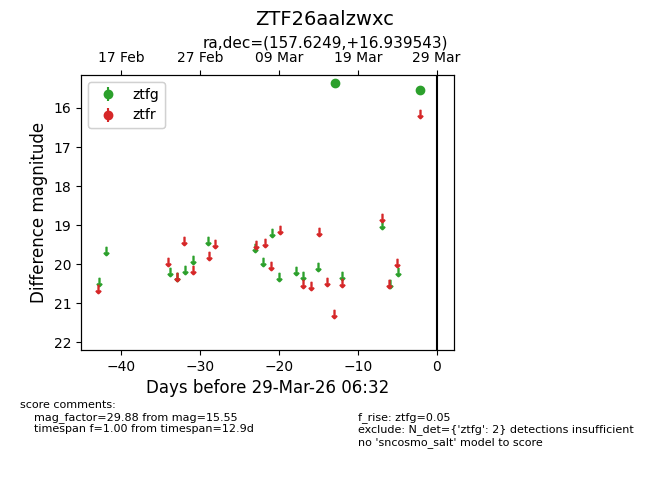
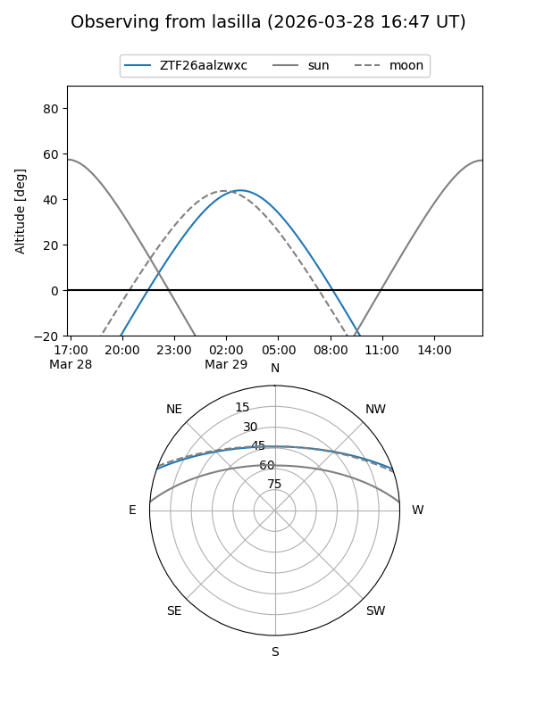
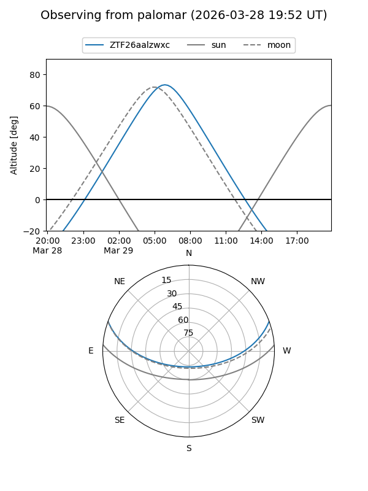

ZTF26aalzwxc
Target ZTF26aalzwxc at 2026-03-29 06:36
Aliases and brokers:
FINK: link
Lasair: link
ALeRCE: link
alt names
ZTF26aalzwxc (ztf,fink_ztf)
Coordinates:
equatorial (ra, dec) = 157.6249,+16.93954
equatorial (HMS+DMS) = 10:30:29.97,+16:56:22.35
galactic (l, b) = (222.8981,+55.92000)
Flags:
Photometry:
last ztfg=15.55
2 ztfg detections
Lightcurve

Visibility


Additional plots